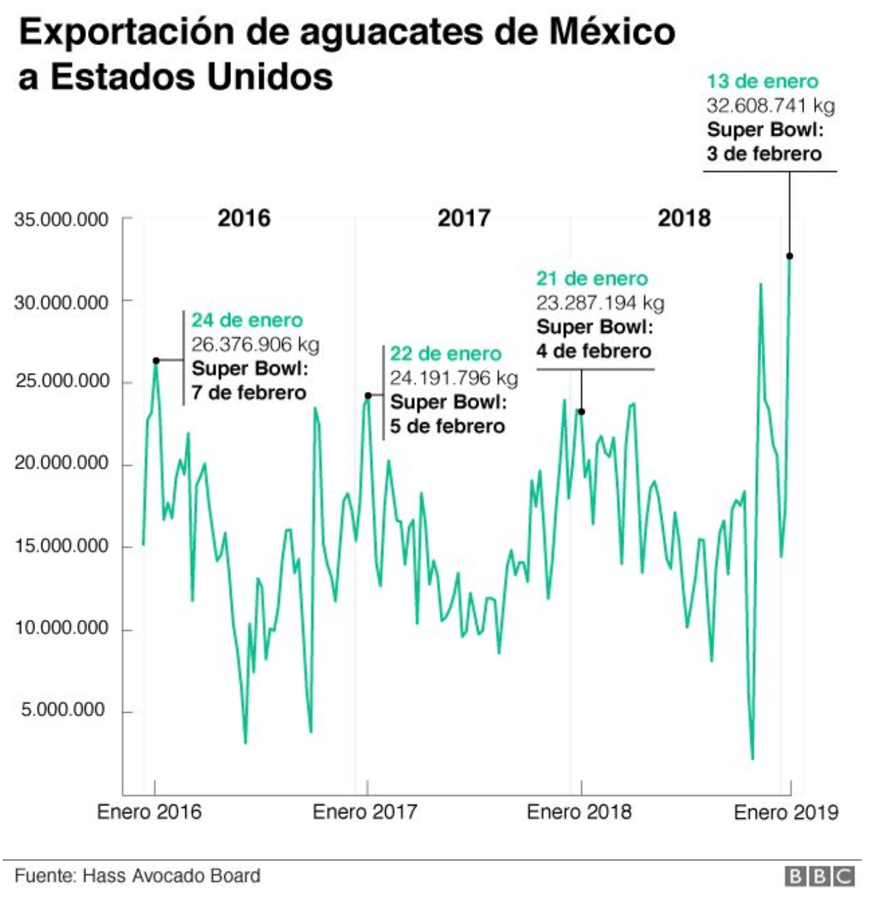
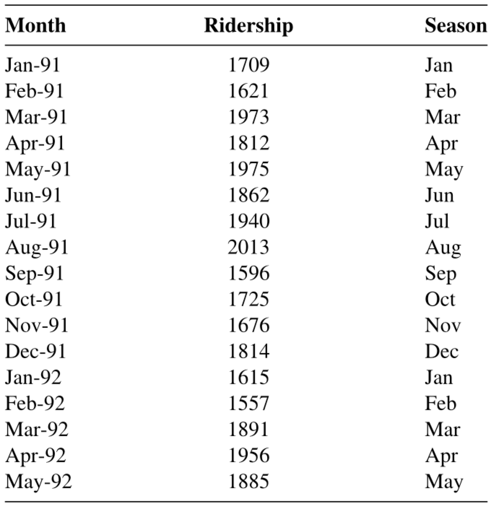

Predictive Models and Time Series
IN2004B: Generation of Value with Data Analytics
Agenda
- Introducción
- Series de tiempo
- Modelo de regresión lineal para series de tiempo
Introducción
Problemas principales de cienca de datos
Problemas de regresión. La respuesta es numérica. Por ejemplo, los ingresos de una persona, el valor de una casa, la presión arterial del paciente.
Problemas de clasificación. La respuesta es categórica e involucra K categorías diferentes. Por ejemplo, la marca de un producto adquirido (A, B, C) o si una persona incumple una deuda (sí o no).
Los predictores pueden ser numéricos o categóricos.
Problema de regresión
Objetivo: encontrar la mejor función \(f(X)\) del predictor \(X\) que describa la respuesta \(Y\).
En términos matemáticos, queremos establecer la siguiente relación
\[Y = f(X) + \epsilon\]
- Donde \(\epsilon\) es un error natural (aleatorio).
¿Cómo encontrar la forma de \(f(X)\)?
Usando datos de entrenamiento.

¿Cómo encontrar la forma de \(f(X)\)?
Usando datos de entrenamiento.

¿Cómo evaluar la calidad de la función candidata \(\hat{f}(X)\)?
Usando datos de validación.

¿Cómo evaluar la calidad de la función candidata \(\hat{f}(X)\)?
Usando datos de validación.

Además…
Podemos usar datos de prueba para una evaluación final del modelo.
Los datos de prueba, son datos que se obtuvieron del proceso que generó los datos de entrenamiento.
Los datos de prueba son independientes de los datos de entrenamiento.

Modelo de Regresión Lineal
Una función candidata muy común para predecir una respuesta es el modelo de regresión lineal.
Tiene la forma matemática:
\[\hat{Y}_i = \hat{f}(X_i) = \hat{\beta}_0 + \hat{\beta}_1 X_i\]
Donde \(i = 1, \ldots, n_t\) es el indice de los \(n_t\) datos de entrenamiento, y
\(\hat{Y}_i\) es la predicción del valor real de la respuesta \(Y_i\) asociada a un valor del predictor igual a \(X_i\).
Los valores \(\hat{\beta}_0\) y \(\hat{\beta}_1\) se llaman coeficientes del modelo.
Los valores de \(\hat{\beta}_0\) y \(\hat{\beta}_1\) se obtienen usando el conjunto de datos de prueba y el método de mínimos cuadrados.
Este método encuentra los valores de \(\hat{\beta}_0\) y \(\hat{\beta}_1\) que minimizan el error cometido por el modelo \(\hat{f}(X_i)\) al tratar de predecir las respuestas del conjunto de entrenamiento.
Técnicamente, el método minimiza la siguiente expresión
\[(Y_1 - (\hat{\beta}_0 + \hat{\beta}_1 X_1 ))^2 + (Y_2 - (\hat{\beta}_0 + \hat{\beta}_1 X_2 ))^2 + \cdots + (Y_{n_t} - (\hat{\beta}_0 + \hat{\beta}_1 X_{n_t} ))^2 \]
Para los \(n_t\) los datos de entrenamiento!
Ejemplo

Regresión lineal en Python
TBD
Supuestos del modelo de regresión lineal
Para usarlo el modelo de regresión, los errores del modelo \(e_i = Y_i - \hat{Y}_i\) obtenidos en los datos de entrenamiento deben que cumplir tres condiciones:
- En promedio, ser iguales a 0.
- Tener la misma dispersión o variabilidad.
- Ser independientes los unos de los otros.
Estos supuestos se evalúan usando un análisis gráfico de residuos (errores del modelo).
En Python
Error de Predicción
Después de estimar y validar el modelo de regresión lineal, podemos verificar la calidad de sus predicciones sobre datos no observados. Es decir, sobre los datos en el conjunto de validación.
Una métrica para esto es el error de predicción promedio (MSE\(_v\)):
\[\text{MSE}_v = \frac{(Y_1 - (\hat{\beta}_0 + \hat{\beta}_1 X_1 ))^2 + (Y_2 - (\hat{\beta}_0 + \hat{\beta}_1 X_2 ))^2 + \cdots + (Y_{n_v} - (\hat{\beta}_0 + \hat{\beta}_1 X_{n_v} ))^2}{n_v} \]
- Para los \(n_v\) los datos de validación!
Entre más pequeño \(\text{MSE}_v\), mejores las predicciones sobre datos no observados.
En la práctica, se utiliza la raíz cuadrada del error de predicción promedio:
\[\text{RMSE}_v = \sqrt{\text{MSE}_v}.\]
La ventaja del \(\text{RMSE}_v\) es que se puede interpretar como:
La variabilidad promedio de una predicción del modelo.
Por ejemplo, si \(\text{RMSE}_v = 1\), entonces una predicción de \(\hat{Y} = 5\) tendrá una tasa de error (promedio) de \(\pm 1\).
En Python
TBD
Otra Métrica: \(R^2\)
En el contexto de Ciencia de Datos, el \(R^2\) se puede interpretar como la correlación entre las respuestas actuales y las predecidas por el modelo.
Cuanto mayor sea la correlación, mejor será la concordancia entre las respuestas previstas y las reales.
Mini-Actividad (cooperative mode)
Considera el conjunto de datos Advertising.xlsx en Canvas.
Usa un modelo para predecir Sales que incluya el predictor Radio (dinero invertido en anuncios por la radio de un producto ($)). ¿Cuál es el valor del \(\text{RMSE}_v\)?
Ahora, usa un modelo para predecir Sales que incluya dos predictores: TV y Radio. ¿Cuál es el valor del \(\text{RMSE}_v\)?
¿Cuál modelo preferen?
Otras funciones candidatas
El modelo de regresión lineal es de los más comunes para predecir una respuesta. Es simple y fácil de calcular e interpretar.
Sin embargo, puede ser limitado para problemas muy complejos.
Para esto, existen otras funciones candidatas \(\hat{f}(X)\) más avanzadas como:
K vecinos más cercanos.
LASSO.
Arboles de decision.
Series de tiempo
¿Qué es una serie de tiempo?
Es una secuencia de observaciones recopiladas en intervalos de tiempo sucesivos.
Los datos de series temporales se usan comúnmente en campos como finanzas, economía, pronóstico del tiempo, procesamiento de señales y muchos otros.
Analizar datos de series temporales nos ayuda a comprender patrones, tendencias y comportamientos a lo largo del tiempo, lo que permite la predicción, la detección de anomalías y la toma de decisiones.
Ejemplo

Técnicamente, es un conjunto de observaciones sobre un predictor (discreto) \(T\) y una respuesta \(Y\).
Las observaciones de \(Y\) se registran en los momentos o tiempos dados por el predictor \(T\).
| Dia | T | Temperatura (Y) |
|---|---|---|
| Lunes | 1 | 10 |
| Martes | 2 | 12 |
| Miércoles | 3 | 15 |
| Jueves | 4 | 14 |
| Viernes | 5 | 18 |
- La característica especial de la serie de tiempo es que las observaciones de \(Y\) no son independientes!
En Python
TBD
Series informativas
Una serie de tiempo informativa es una serie que contiene patrones que podemos utilizar para predecir valores futuros de la serie.
Los tres posibles patrones son:
- Tendencia: la serie tiene un comportamiento creciente/decreciente.
- Estacionalidad: la serie tiene un patrón cíclico repetitivo en sus valores.
- Autocorrelación: la serie sigue un patrón que puede ser descrito con valores anteriores de la misma.
Tendencia
TBD
Estacionalidad
TBD
Autocorrelación
TBD
Series No Informativas: Ruido Blanco
Un ruido blanco es una serie cuyos valores, en promedio, son 0 y tienen una variación constante. También, sus valores son independientes entre si.
Se usa para describir el error aleatorio o natural.
Modelo de regresión lineal para series de tiempo
Modelo de Regresión Lineal
El modelo de regresión lineal es útil para capturar los patrones de una serie de tiempo. En este contexto, el modelo toma la forma:
\[\hat{Y}_i = \hat{\beta}_0 + \hat{\beta}_1 T_i\]
Donde \(i = 1, \ldots, n_t\) es el indice de los \(n_t\) datos de entrenamiento, y
\(\hat{Y}_i\) es la predicción del valor real de la respuesta \(Y_i\) en el tiempo \(T_i\).
Tendencia
La tendencia de la serie de tiempo es capturada por el valor de \(\hat{\beta}_1\) en
\[\hat{Y}_i = \hat{\beta}_0 + \hat{\beta}_1 T_i\]
Si \(\hat{\beta}_1\) es positivo, la serie tiene una tendencia ascendente.
Si \(\hat{\beta}_1\) es negativo, la serie tiene una tendencia descendente.
Los valores de \(\hat{\beta}_0\) y \(\hat{\beta}_1\) se obtienen usando el método de mínimos cuadrados.
Evaluación del Modelo
Recuerda que los errores del modelo de regresión lineal (\(e_i = Y_i - \hat{Y}_i\)) deben de cumplir con dos condiciones:
En promedio, ser iguales a 0.
Tener la misma dispersión o variabilidad.
Ser independientes los unos de los otros.
En el contexto de series de tiempo, esto significa que los errores del modelo \(e_i\) se deben de comportar como un ruido blanco que no contiene patrones.
En Python
TBD
Analysis de Residuales
TBD
El Modelo es Más Flexible que Eso
Si es necesario, el modelo de regresión lineal se puede extender para capturar relaciones cuadráticas. Para esto, el modelo toma la siguiente forma:
\[\hat{Y}_i = \hat{\beta}_0 + \hat{\beta}_1 T_i + \hat{\beta}_2 T^{2}_i \]
Donde \(T^{2}_i\) es el valor del indice de tiempo al cuadrado.
\(\hat{\beta}_2\) es un término que captura una posible curvatura en la serie de tiempo.
En Python
TBD
Analysis de Residuales
TBD
Tendencias exponenciales
Si una serie tiene una tendencia exponencial, el modelo de regresión lineal podría no hacer apropiado para capturar dicha tendencia.
Un remedio sencillo es calcular el logaritmo de los datos de la respuesta y obtener un modelo de regresión lineal para la variable transformada.
Es decir, usar el siguiente modelo para describir la serie de tiempo:
\[\log (Y_i) = \hat{\beta}_0 + \hat{\beta}_1 T_i.\] ## Ejemplo
TBD
Mini-Actividad (cooperative mode)
Considera el conjunto de datos CanadianWorkHours.xlsx en Canvas.
Visualiza la serie en Python. La variable de respuesta es Working Hours y el predictor es el año.
Usando Python, contesta la pregunta: ¿Cúal de los siguientes modelos se ajusta mejor a la serie?
Modelo de regresión con tendencia lineal.
Modelo de regresión con tendencia quadratica.
Modelo de regresión con tendencia exponencial.
Identificando Heteroscedasticidad
Heteroscedastisidad surge cuando la dispersión de los errores del modelo no es constante a través del tiempo.
Ejemplo
Solución
Si identificamos heteroscedasticidad en los errores del modelo de regresión, tenemos algunas opciones de transformaciones en nuestra serie original.
Aplicar transformaciones a serie de tiempo \(Y_i\): Logaritmo
- Si la serie de tiempo original contiene valores negativos, se le puede desfasar sumando el negativo de su mínimo valor.
En Python
¿Qué hago si la transformación no funciona?
- Si la transformación de logaritmo no reduce significativamente la heteroscedasticidad, existen modelos para modelar la varianza llamados GARCH.
- Puedes consultar literatura sobre dichos modelos y sus implementaciones en software en un texto de series de tiempo como Time Series Analysis with applications in R de Cryer y Chan.
Estacionalidad
La estacionalidad consiste en un comportamiento repetitivo o cíclico que ocurre con una frecuencia constante.
Ejemplos:
Demanda de prendas de invierno
Demanda para viajes turísticos
Volumen de Lluvia durante el año.
Capturando Estacionalidad
El modelo de regresión lineal se puede extender para capturar patrones de estacionalidad en la serie de tiempo.
Para esto, se crea un predictor adicional categórico que indica la estación a la que pertenece cada dato.
Detrás de cámaras, el predictor adicional categórico se transforma en varios predicadores numéricos auxiliares.

Analizando series estacionales en Python
TBD
Desventajas de los modelos de regresión lineal
A pesar de su simplicidad y versatilidad, los modelos de regresión lineal no son los mejores para describir una serie de tiempo.
Esto es porque no asumen una dependencia entre valores consecutivos de la serie de tiempo. Es decir, no usan el hecho de que, por ejemplo, \(Y_1\) puede ayudarnos a predecir \(Y_2\), y \(Y_2\) puede ayudarnos a predecir \(Y_3\), etc.
Modelos que nos ayudan a utilizar observaciones anteriores para predecir valores futuros de la variable de respuesta \(Y\) son los modelos autoregresivos.